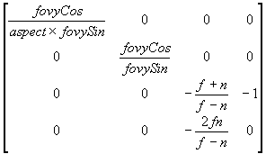

#include <nitro/fx/fx_mtx44.h>
void MTX_Perspective( fx32 fovySin, fx32 fovyCos, fx32 aspect, fx32 n, fx32 f, MtxFx44 * mtx );
| fovySin | 縦(y)方向の視界角度(画角)／２の正弦をとった値 |
| fovyCos | 縦(y)方向の視界角度(画角)／２の余弦をとった値 |
| aspect | 縦に対する横の視界の割合(縦横比:視界での幅／高さ) |
| n | 視点からnearクリップ面までの距離 |
| f | 視点からfarクリップ面までの距離 |
| mtx | 4x4行列へのポインタ |
なし。
*mtxに透視射影行列をセットします。
セットされる行列は以下の通りです。

内部で除算器を使用します。割り込み内で使用される場合には除算器の注意事項をご確認ください。
G3_Perspective, MTX_Frustum, MTX_Ortho
Ver. 2004/04/27 初版